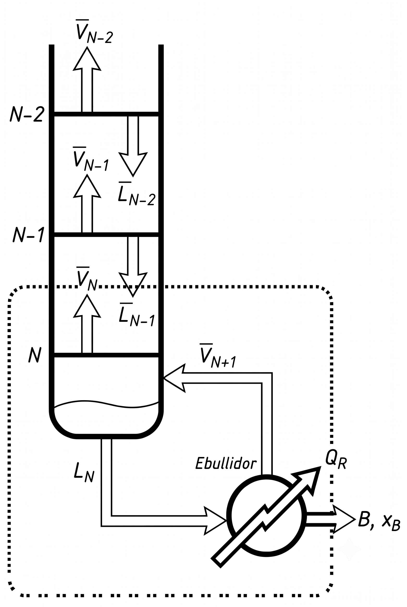
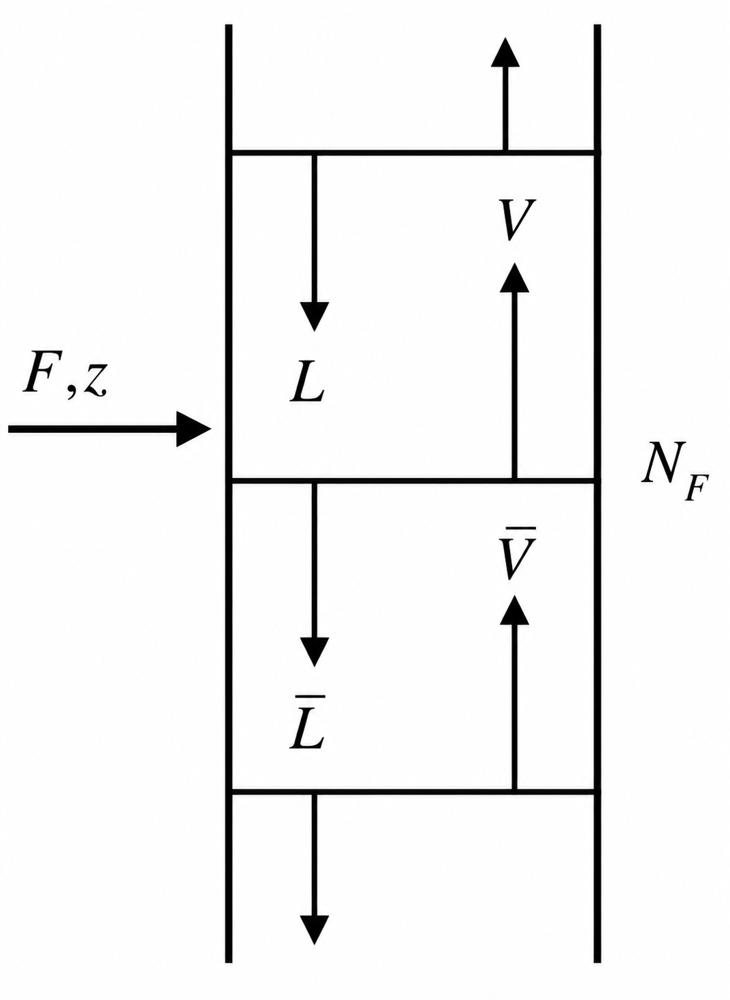
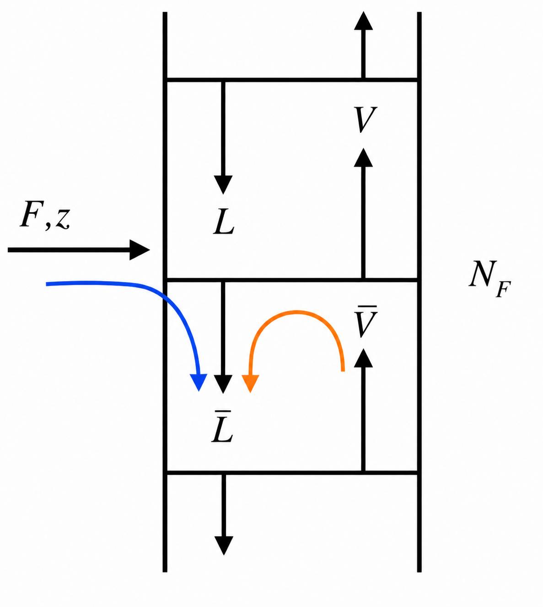

IQYA-2031 · Proyecto de Operaciones Unitarias
Diseño y análisis de columnas de destilación continua
Volatilidad, equilibrio líquido-vapor y el método gráfico de McCabe-Thiele.

Lo que veremos hoy
Fundamentos
Principios físicos de la separación, equilibrio líquido-vapor y volatilidad relativa.
Componentes
Cada parte de la columna, las corrientes internas y los balances de materia.
McCabe-Thiele
El método gráfico paso a paso y la derivación de las líneas de operación.
Diseño y optimización
Número de etapas teóricas, condiciones óptimas y un ejemplo completo.
Aspectos prácticos
Eficiencias reales, diseño mecánico, limitaciones y casos especiales.
Fundamentos de la destilación
Volatilidad relativa y la curva de equilibrio líquido-vapor.
La diferencia de volatilidades es lo que hace posible la separación.
Volatilidad relativa (α)
Es el parámetro más importante en destilación: cuantifica qué tan fácil o difícil será separar dos componentes.
Es una medida adimensional que compara las tendencias de vaporización de dos sustancias.
¿Cómo se define α?
Para una mezcla binaria de $A$ (más volátil) y $B$ (menos volátil) en equilibrio:
Es la relación entre las razones vapor/líquido de cada componente.
Para componentes puros (sistema ideal)
$P^{\circ}$ es la presión de vapor del componente puro a la temperatura del sistema.
¿Qué nos dice el valor de α?
Imposible
No hay diferencia de volatilidad. No se pueden separar por destilación (azeótropos).
Difícil
Se requieren muchas etapas y alto reflujo.
Moderada
Diseño económico típico.
Fácil
Pocas etapas y bajo reflujo requeridos.
Variación con la temperatura: $\alpha$ generalmente disminuye al aumentar la temperatura, porque las presiones de vapor se acercan. Por eso algunas separaciones se hacen al vacío (menor temperatura) para aumentar $\alpha$.
La curva de equilibrio (ELV)
Relaciona la composición del vapor ($y$) con la del líquido ($x$) a presión constante. Para sistemas ideales (ley de Raoult):
Mueve $\alpha$ y observa cómo la curva se separa de la diagonal. La distancia vertical a la diagonal es la fuerza impulsora de la separación.
Características y datos
- Siempre pasa por (0,0) y (1,1): en los extremos hay componentes puros.
- Distancia a la diagonal: fuerza impulsora de la separación en cada composición.
- Curvatura: mayor $\alpha$ → mayor curvatura y separación de la diagonal.
- Máximos o inflexiones: indican azeótropos en sistemas no ideales.
Sistemas no ideales
$\gamma$ es el coeficiente de actividad que considera las desviaciones de la idealidad.
Obtención de datos: experimental (más preciso), correlaciones (modelos de actividad) o simuladores. La precisión del diseño depende de la calidad de estos datos.
Anatomía de una columna
Componentes, corrientes internas y su funcionamiento.
Anatomía de una columna de destilación

Columna con secciones de rectificación y agotamiento, condensador y rehervidor.
El método de McCabe-Thiele
Zonas, corrientes, balances de materia y las tres líneas de operación.
Introducción a McCabe-Thiele
Herramienta gráfica para analizar la destilación binaria: la separación de una mezcla de dos componentes.
Visualiza el proceso, calcula el número de etapas teóricas y la ubicación óptima del plato de alimentación sin resolver sistemas complejos.
Diseño de columnas, optimización, análisis de sensibilidad y evaluación de separaciones binarias.
Se basa en balances de materia y relaciones de equilibrio, con suposiciones simplificadoras que facilitan el análisis gráfico sin perder precisión significativa.

Las tres zonas y las corrientes principales de la columna.
Rectificación, alimentación, agotamiento
- Rectificación (arriba): la mezcla se enriquece en el componente más volátil al ascender hacia el condensador.
- Alimentación: plato donde entra la mezcla; conecta las otras dos zonas. Su condición térmica afecta el rendimiento.
- Agotamiento (abajo): se agota el componente más volátil, concentrando el pesado hacia el rehervidor y los fondos.
Las cinco corrientes y dos cargas térmicas
Alimentación
$F,\ z$ — el flujo y composición que se desea separar.
Destilado
$D,\ x_D$ — producto rico en el componente volátil.
Fondos
$B,\ x_B$ — producto rico en el componente pesado.
Condensador
$Q_C$ — retira calor y genera el reflujo.
Rehervidor
$Q_R$ — aporta calor y genera el vapor (boilup).
Reflujo / boilup
$L$ y $V$ — corrientes que circulan dentro de la columna.

Envolvente de balance alrededor de la parte superior de la columna.
Balances de materia
Balance alrededor de cada etapa en la parte superior. Generalizando hasta el plato $n$:
Describen cómo se enriquece la mezcla en el volátil al ascender, etapa por etapa. Son la base de la Línea de Operación Superior (LOS).
Línea de operación superior (LOS)
Suposición: corrientes equimolares
El desbordamiento equimolar hace que $L$ y $V$ sean constantes en la zona: $V_1=V_2=\dots=V$ y $L_1=L_2=\dots=L$.
Con $V=L+D$ e introduciendo la relación de reflujo $R=L/D$:
Ecuación final de la LOS
La pendiente depende del reflujo
Representa la relación líquido/vapor en la zona.
Corte con el eje $y$; depende de la pureza del destilado.
Mayor R → más vertical
Mayor $R$ → mayor pendiente → línea más cercana a la diagonal → menos etapas.
Esta recta describe por completo la relación entre las composiciones de líquido y vapor en toda la zona de rectificación.

Envolvente de balance alrededor de la parte inferior de la columna.
Balances de materia
Las barras ($\bar{L},\bar{V}$) distinguen estos flujos de los de la zona de rectificación: son distintos por la entrada de la alimentación.
Línea de operación inferior (LOI)
Con la misma suposición de corrientes equimolares y la relación de ebullición (boilup) $S=\bar{V}/B$:
Ecuación final de la LOI

La alimentación cambia los flujos internos entre las dos secciones.
Conexión de flujos
Es el punto crítico donde se conectan rectificación y agotamiento. La entrada de $F$ cambia los flujos internos:
$q$ = fracción de $F$ que entra como líquido. Define la condición térmica de la alimentación.
Las cinco condiciones de $q$

Líquido saturado ($q=1$)
La alimentación está en su punto de burbuja. Todo $F$ se une a la corriente de líquido descendente.

Vapor saturado ($q=0$)
La alimentación está en su punto de rocío. Todo $F$ se une a la corriente de vapor ascendente.

Mezcla líquido-vapor ($0La fracción $q$ se une al líquido y $(1-q)$ al vapor. Con $q=1-\phi$, donde $\phi$ es la fracción vaporizada.
$$\bar{L}=L+Fq,\quad V=\bar{V}+F(1-q)$$
La fracción $q$ se une al líquido y $(1-q)$ al vapor. Con $q=1-\phi$, donde $\phi$ es la fracción vaporizada.

Líquido subenfriado ($q>1$)
Está por debajo del punto de burbuja. Al calentarse condensa parte del vapor ascendente, aumentando el flujo de líquido.

Vapor sobrecalentado ($q<0$)
Está por encima del punto de rocío. Al enfriarse evapora parte del líquido descendente, aumentando el flujo de vapor.
$q$ en términos de entalpías
$q$ es la relación entre el calor para vaporizar 1 mol de alimentación y el calor latente molar:
- $H_V$: entalpía molar del vapor saturado
- $H_L$: entalpía molar del líquido saturado
- $H_F$: entalpía molar de la alimentación
Cálculo práctico (líquido subenfriado)
$c_p$ es el calor específico y $\lambda$ el calor latente de vaporización.
La ecuación de la línea q
El punto de intersección de la LOS y la LOI está sobre la línea q. De los balances en el plato de alimentación:
- $z$: composición de la alimentación
- $q$: condición térmica de la alimentación
$q=1$ (líquido saturado): línea vertical en $x=z$.
$q=0$ (vapor saturado): línea horizontal en $y=z$.
$0
Las tres líneas del método
Rectificación
Pendiente según el reflujo $R$.
Alimentación
Dónde se intersectan LOS y LOI.
Agotamiento
Pendiente según la ebullición $S$.
Estas tres rectas, junto con la curva de equilibrio, constituyen la base del método McCabe-Thiele para el diseño de columnas binarias.
Destilación n-hexano / p-xileno
Aplicamos todo el método, paso a paso, y construimos el diagrama McCabe-Thiele.
Condiciones de entrada
La meta: calcular
- Flujos de productos $D$ y $B$
- Reflujo mínimo $R_{\min}$ y punto pinch
- Reflujo de operación $R$ y las líneas LOS/LOI
- Número de etapas teóricas $N$ y plato de alimentación
- Etapas mínimas $N_{\min}$
Flujos de productos
Resolviendo el sistema
Verificación: $D+B=100$ ✓ y $0.95(45.65)+0.03(54.35)=45$ ✓.
La curva de equilibrio ($\alpha=6.88$)
Con la volatilidad relativa entre n-hexano y p-xileno generamos la curva:
| $x$ | 0.0 | 0.2 | 0.4 | 0.6 | 0.8 | 1.0 |
|---|---|---|---|---|---|---|
| $y$ | 0.0 | 0.63 | 0.82 | 0.91 | 0.96 | 1.0 |
El diagrama de McCabe-Thiele
Punto pinch y $R_{\min}$
El punto pinch es donde la línea q corta la curva de equilibrio. Resolviendo la línea q con la curva:
Es el «cuello de botella»: la zona de máxima dificultad, donde se concentran las etapas a reflujo bajo.
Reflujo mínimo
Es el límite teórico inferior (infinitas etapas). En la práctica se opera con $1.2$–$1.5\,R_{\min}$.
La línea de operación superior real
Con este valor, la LOS de operación:
Al subir el reflujo sobre el mínimo
- Disminuye el número de etapas
- Aumenta el consumo energético (condensador y rehervidor)
- Aumenta el diámetro de la columna
$S_{\min}$ y flujos mínimos
La LOI mínima conecta $(x_B,x_B)$ con el punto pinch. Su pendiente es:
Flujos mínimos de retorno
Ojo: $3.2$ es la pendiente $(S{+}1)/S$, no $S$ directamente. De ahí $S_{\min}=0.45$ y $\bar V_{\min}=24.45$ kmol/h.
Intersección y LOI de operación
Igualando la LOS de operación con la línea q ($y=-x+0.9$):
LOS de operación: $y=0.453x+0.520$ (desde $x_D$ hasta el punto $x_i$).
LOI de operación: recta desde $(x_B,x_B)=(0.03,0.03)$ que pasa por la intersección $(0.26,0.64)$.
El corazón del método: escalonar
- Empezar en $x_D$ ($0.95$) sobre la diagonal.
- Horizontal hacia la izquierda hasta la curva de equilibrio (fin de una etapa).
- Vertical hacia abajo hasta la línea de operación.
- Repetir; al cruzar la intersección $x_i$, cambiar a la LOI.
- Continuar hasta alcanzar $x_B$ ($0.03$).
Significado físico
Cada escalón horizontal representa el equilibrio líquido-vapor en un plato; cada escalón vertical, los flujos entre platos. El conjunto es la separación etapa por etapa.
👉 Vuelve al diagrama interactivo para ver el escalonado animado hasta $N=7$ etapas.
Resumen del ejemplo
| $D$ | 45.65 kmol/h | $B$ | 54.35 kmol/h |
| $R_{\min}$ | 0.636 | $R$ | 0.827 |
| $S_{\min}$ | 0.45 | $S$ | 0.61 |
| $L_{\min}$ | 29.0 kmol/h | $\bar V_{\min}$ | 24.45 kmol/h |
| $L=RD$ | 37.8 kmol/h | $\bar V=SB$ | 33.4 kmol/h |
N = 7
Etapas teóricas de equilibrio.
NF ≈ 4
Plato donde se cruza la intersección.
A reflujo infinito (total), el número de platos mínimo es $N_{\min}=4$.
Aspectos prácticos
Eficiencia de platos, diseño hidráulico, limitaciones, azeótropos y control.
Eficiencia de plato
Los platos reales no alcanzan el equilibrio completo. La eficiencia global relaciona etapas teóricas y reales:
Correlación de O'Connell
$\mu_L$ = viscosidad del líquido (cP), $\alpha_{\text{avg}}$ = volatilidad relativa promedio.
Para empaque se usa el concepto HETP: $H_{\text{empaque}}=N_{\text{teórico}}\times \text{HETP}$.
Factores y valores típicos
| Sistema | Eficiencia |
|---|---|
| Hidrocarburos ligeros | 80–90% |
| Aromáticos | 70–80% |
| Alcoholes | 60–70% |
| Sistemas acuosos | 50–60% |
| Glicoles | 30–40% |
Diámetro de la columna
El diámetro debe manejar el vapor sin inundación, pero sin encarecer. La velocidad de inundación (Souders-Brown):
Se redondea a diámetros estándar: 0.5, 0.6, 0.8, 1.0, 1.2, 1.5, 1.8, 2.0, 2.5, 3.0 m…
Cuándo McCabe-Thiele no basta
Solo sistemas binarios
Requiere un diagrama 2D ($x$-$y$). Para multicomponentes: métodos matriciales (Thiele-Geddes) o simuladores.
Violación de CMO
Si los calores latentes difieren mucho (>20%) o hay calores de mezcla, las líneas de operación se curvan → método de Ponchon-Savarit.
Sistemas muy no ideales
Azeótropos (la curva cruza la diagonal) e inmiscibilidad líquida requieren técnicas especiales.
Condiciones especiales
Presión variable ($\alpha$ cambia), destilación reactiva, alimentaciones múltiples o columnas acopladas.
Valor pedagógico permanente
Da comprensión visual del proceso de separación.
Permite estimaciones rápidas de diseño preliminar.
Es la base conceptual de métodos más avanzados.
Sirve para verificar resultados de simuladores.
Sistemas azeotrópicos
En un azeótropo $x=y$: la curva de equilibrio toca o cruza la diagonal y no hay fuerza impulsora.
Más común
$T_{az}
Menos común
$T_{az}>T_A,T_B$ puros. Desviaciones negativas de Raoult. Ej.: ácido nítrico-agua (68% HNO₃, 122 °C).
Cómo romperlos: cambio de presión (dos columnas), destilación azeotrópica (arrastrante, p. ej. benceno para etanol), destilación extractiva (solvente pesado, p. ej. etilenglicol) o procesos híbridos (membranas, adsorción, pervaporación).
Control de columnas
Variables a controlar
- Composiciones de productos ($x_D$, $x_B$) — objetivos primarios.
Medios de control
- Reflujo ($L$ o $L/D$)
- Vapor al rehervidor ($V$ o $V/B$)
- Presión de la columna y niveles
Esquemas típicos
Control L-V (más común): respuesta directa, pero con interacción entre lazos.
Control L/D – V/B: mantiene razones constantes, mejor ante perturbaciones de alimentación.
Temperatura inferencial: se mide $T$ en un plato sensible (donde $\partial T/\partial x$ es máximo), más económico que analizadores.
Avanzado: control multivariable predictivo (MPC), presión diferencial (anti-inundación) y feedforward.